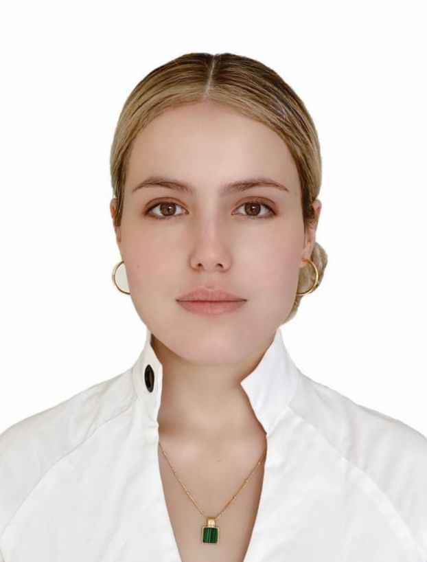

💜 Vanessa Restrepo Hurtado 💜Search Analist |
Biografía
Nacida el 24 de noviembre del año 1999 en Armneia-Quindío , la menor de sus hermanas por parte de su madre,
y la del medio de sus hermanas por parte de su padre. A la edad de 10 años se fue a vivir con su madre y sus hermanas
a la ciudad de Tulua-Valle del Cauca. Después de 4 años de carrera, logró graduarse en el año 2021 en plena pandemia, consiguiendo asi su primer trabajo como consultora, para una empresa panameña, donde después de unos meses encontraría el trabajo de sus sueños como investigadora para una ONG estadounidense. Motivada a seguir creciendo en su carrera profesional, tomó un curso de inglés intensivo, y entrará a hacer su maestría en economía con tan solo 23 años. Por ahora se encuntra soltera, pero no se cierra a la posibilidad de darse la oportunbidad de encontrar el amor de su vida. |
|---|
| Año | Lugar |
|---|---|
| 2021 | Numeris |
| 2021-2022 | Grupo Valor |
| 2022-presente | IPA Colombia |